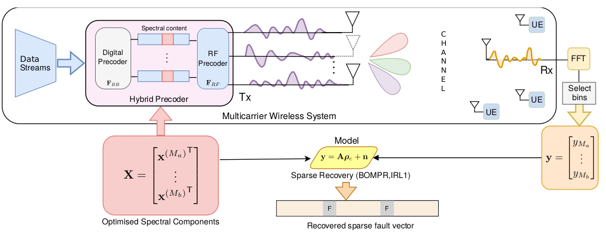
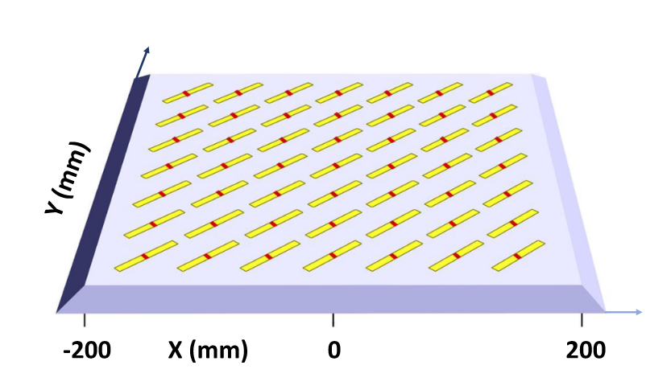
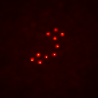

|

|
Spotting Faults over the spectrum: Fast and online antenna
array fault diagnosis for multi-carrier precoding systems
Sreekar Sai Ranganathan,
Prajosh K.P.,
Uday K. Khankhoje,
Francesco Ferranti
IEEE Transactions on Wireless Communications, Feb 2023 (link, PDF)
A compressed sensing-based fault diagnosis framework in the spectral domain that allows simultaneous diagnosis and operation of a wireless communication system.
|
|

|
Efficient Mutual-Coupling Aware Fault Diagnosis of Phased Array Antennas Using Optimized Excitations
Prajosh K.P.,
Sreekar Sai Ranganathan,
Francesco Ferranti,
Uday K. Khankhoje
IEEE Antennas and Wireless Propagation Letters, Sep 2022 (link,PDF)
A compressed-sensing based fault diagnosis framework accounting for electromagnetic mutual-coupling effects among antennas.
|
|
|
4D spatio-temporal neural activity imaging using Fourier LFM
Master's thesis project at the CIIP Lab, Technical University of Munich (Sep 2022 - Mar 2023)
A recent development for reconstructing neural activity from fourier-light field data is sparse-decomposition LFM, which isolates sparse neural activity from background fluorescence for improved reconstruction.
Developed new methods for faster reconstruction exploiting redundancies in neural activity. Supported by the DAAD KOSPIE scholarship program.
|
|  |
Improved NMF for imaging through scattering media
Summer Internship at the Complex Media Optics Lab, ENS Paris (May - Aug 2022)
Inspired by recent work using non-negative matrix factorization (NMF) for imaging through scattering media, developed a new regularisation framework exploiting optical memory-effect correlations.
|
|
{kind=link}